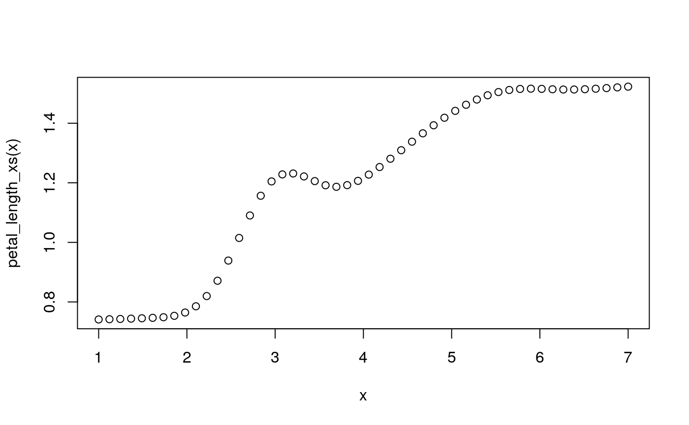

Methods and xspliner environment
Krystian Igras
2018-12-11
methods.RmdPredict
As xspliner final model is GLM, predict method is just wrapper of stats::predict.glm function. Let’s see it on the below example:
library(xspliner)
library(randomForest)
library(magrittr)
rf_iris <- randomForest(Petal.Width ~ Sepal.Length + Petal.Length + Species, data = iris)
model_xs <- xspline(Petal.Width ~
Sepal.Length +
xs(Petal.Length, effect = list(grid.resolution = 100), transition = list(bs = "cr")) +
xf(Species, transition = list(stat = "loglikelihood", value = -300)),
model = rf_iris)
newdata <- data.frame(
Sepal.Length = 10,
Petal.Length = 2,
Species = factor("virginica", levels = levels(iris$Species)))
predict(model_xs, newdata = newdata)## 1
## -0.2259925Summary
Summary method allows you to check the basic model details. See below what possibilities the method to xspliner model offers.
GLM summary
Standard summary method is just wrapper for summary::glm. In order to use this just type:
##
## Call:
## glm(formula = Petal.Width ~ Sepal.Length + xs(Petal.Length) +
## xf(Species), family = family, data = data)
##
## Deviance Residuals:
## Min 1Q Median 3Q Max
## -0.68380 -0.09038 -0.01731 0.10761 0.49809
##
## Coefficients:
## Estimate Std. Error t value Pr(>|t|)
## (Intercept) -2.01399 0.14069 -14.315 < 2e-16 ***
## Sepal.Length -0.01360 0.03621 -0.376 0.708
## xs(Petal.Length) 3.06843 0.21094 14.547 < 2e-16 ***
## xf(Species)versicolorvirginica -0.47012 0.11114 -4.230 4.11e-05 ***
## ---
## Signif. codes: 0 '***' 0.001 '**' 0.01 '*' 0.05 '.' 0.1 ' ' 1
##
## (Dispersion parameter for gaussian family taken to be 0.03506734)
##
## Null deviance: 86.5699 on 149 degrees of freedom
## Residual deviance: 5.1198 on 146 degrees of freedom
## AIC: -70.946
##
## Number of Fisher Scoring iterations: 2Predictor based summary
Summary method allows you to check details about transformation of specific variable.
Standard usage summary(xspliner_object, variable_name)
Quantitative variable When predictor is quantitative variable its transition is based on GAM model. For this case summary displays summary of that model.
##
## Family: gaussian
## Link function: identity
##
## Formula:
## yhat ~ s(Petal.Length, bs = "cr")
##
## Parametric coefficients:
## Estimate Std. Error t value Pr(>|t|)
## (Intercept) 1.205057 0.003467 347.6 <2e-16 ***
## ---
## Signif. codes: 0 '***' 0.001 '**' 0.01 '*' 0.05 '.' 0.1 ' ' 1
##
## Approximate significance of smooth terms:
## edf Ref.df F p-value
## s(Petal.Length) 8.799 8.988 740.8 <2e-16 ***
## ---
## Signif. codes: 0 '***' 0.001 '**' 0.01 '*' 0.05 '.' 0.1 ' ' 1
##
## R-sq.(adj) = 0.985 Deviance explained = 98.7%
## GCV = 0.0013324 Scale est. = 0.0012018 n = 100Qualitative variable
In case of qualitative predictor, the method displays data.frame storing information how factors were merged during the transition.
## orig pred
## 1 setosa setosa
## 2 versicolor versicolorvirginica
## 3 virginica versicolorvirginicaPrint method works similarly to the summary. In case of passing just the model, standard print.glm is used.
##
## Call: glm(formula = Petal.Width ~ Sepal.Length + xs(Petal.Length) +
## xf(Species), family = family, data = data)
##
## Coefficients:
## (Intercept) Sepal.Length
## -2.0140 -0.0136
## xs(Petal.Length) xf(Species)versicolorvirginica
## 3.0684 -0.4701
##
## Degrees of Freedom: 149 Total (i.e. Null); 146 Residual
## Null Deviance: 86.57
## Residual Deviance: 5.12 AIC: -70.95Predictor based print
Summary method allows you to check details about transformation of specific variable.
Standard usage print(xspliner_object, variable_name)
Quantitative variable When predictor is the quantitative variable its transition is based on GAM model. For this case print uses standard print.gam method.
##
## Family: gaussian
## Link function: identity
##
## Formula:
## yhat ~ s(Petal.Length, bs = "cr")
##
## Estimated degrees of freedom:
## 8.8 total = 9.8
##
## GCV score: 0.001332404Qualitative variable
In case of qualitative predictor, standard print.factorMerger method is used.
## Family: gaussian Factor Merger.
##
## Factor levels were merged in the following order:
##
## groupA groupB model pvalVsFull pvalVsPrevious
## --- ----------- -------------------- ---------- ----------- ---------------
## 0 -256.8071 1 1
## 1 versicolor virginica -272.3340 0 0
## 2 setosa versicolorvirginica -351.2817 0 0Plot
You can see all details in graphics
Transition
Transition method allows you to extract objects used during building transition of variables. There are three possible object types that can be extracted.
Extracting effect
Each transition is built on top of the black box response data. For example the default response for quantitative variables is PDP - for qualitative ones ICE.
In order to extract the effect use transition method with type parameter equals to data
## Petal.Length yhat
## 1 1.000000 0.7495848
## 2 1.059596 0.7493848
## 3 1.119192 0.7493848
## 4 1.178788 0.7530966
## 5 1.238384 0.7549570
## 6 1.297980 0.7568911## Species yhat yhat.id
## 1 setosa 0.2465327 1
## 2 versicolor 0.7144849 1
## 3 virginica 0.8714200 1
## 4 setosa 0.2147814 2
## 5 versicolor 0.7086209 2
## 6 virginica 0.8696299 2Extracting transition model
After we built transition basing on continuity of variable specific model is created. In case of quantitative predictor we build GAM model in order to get spline approximation of effect. In case of qualitative predictor we build factorMerger object and get optimal factor division on that.
To extract the model, use transition method with type = "base":
##
## Family: gaussian
## Link function: identity
##
## Formula:
## yhat ~ s(Petal.Length, bs = "cr")
##
## Estimated degrees of freedom:
## 8.8 total = 9.8
##
## GCV score: 0.001332404## Family: gaussian Factor Merger.
##
## Factor levels were merged in the following order:
##
## groupA groupB model pvalVsFull pvalVsPrevious
## --- ----------- -------------------- ---------- ----------- ---------------
## 0 -256.8071 1 1
## 1 versicolor virginica -272.3340 0 0
## 2 setosa versicolorvirginica -351.2817 0 0Extracting transition function
The final result of building transition is transformation function, that is used in the final GLM model estimation.
To extract the function just use transition method with type = "function".
petal_length_xs <- transition(model_xs, predictor = "Petal.Length", type = "function")
x <- seq(1, 7, length.out = 50)
plot(x, petal_length_xs(x))
species_xf <- transition(model_xs, predictor = "Species", type = "function")
species_xf(c("setosa", "versicolor", "virginica"))## [1] setosa versicolorvirginica versicolorvirginica
## Levels: setosa versicolorvirginica